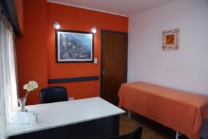
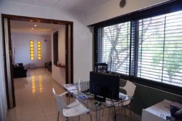

Estamos en el corazón de Lomas de Zamora
Coordiná tu turno por teléfono o WhatsApp, o acercate directamente al centro.
Atendemos numerosas obras sociales y prepagas
Trabajamos con una amplia variedad de coberturas médicas. Escribinos por WhatsApp o llamá al centro para confirmar si tu obra social o prepaga tiene convenio.
Trabajamos con estas coberturas
Si la tuya no aparece en la lista, escribinos igual — sumamos convenios seguido.
¿No tenés obra social? Las sesiones particulares tienen un costo por consulta — consultanos el valor vigente.
Así es el centro por dentro
Así te vas a encontrar el lugar el día de tu consulta.


Lo que más nos preguntan
¿Qué obras sociales atienden?
Trabajamos con numerosas obras sociales y prepagas — mirá el listado completo más arriba en esta página. Si la tuya no aparece, escribinos por WhatsApp y te confirmamos la cobertura.
¿Necesito orden médica para sacar un turno?
Depende de tu obra social: algunas la piden y otras no. Te recomendamos consultarlo con nosotros por WhatsApp antes de tu turno para evitar demoras.
¿Cómo cancelo un turno?
Desde "Mis turnos" en la web, ingresando con tu cuenta, o escribiéndonos por WhatsApp con la mayor anticipación posible para liberar el horario a otro paciente.
¿Puedo atenderme si no tengo obra social?
Sí, atendemos pacientes particulares. El costo de la sesión se confirma directamente con el centro.
¿Cuál es el horario de atención?
Atendemos de lunes a viernes de 8 a 20 hs. No hay turnos disponibles los fines de semana.
¿Puedo sacar un turno para un familiar?
Sí, podés coordinarlo por WhatsApp o llamando al centro, pasándonos los datos de la persona que se va a atender.
No encuentro turnos disponibles para lo que necesito, ¿qué hago?
Escribinos por WhatsApp — a veces se liberan horarios o podemos coordinarlo directamente con el profesional.